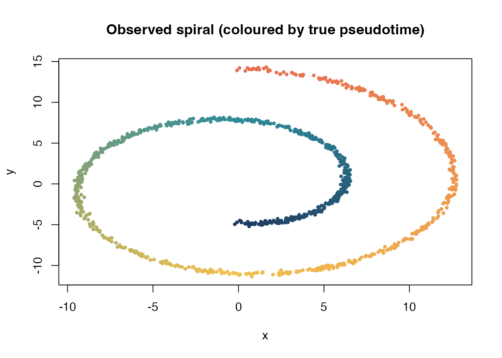
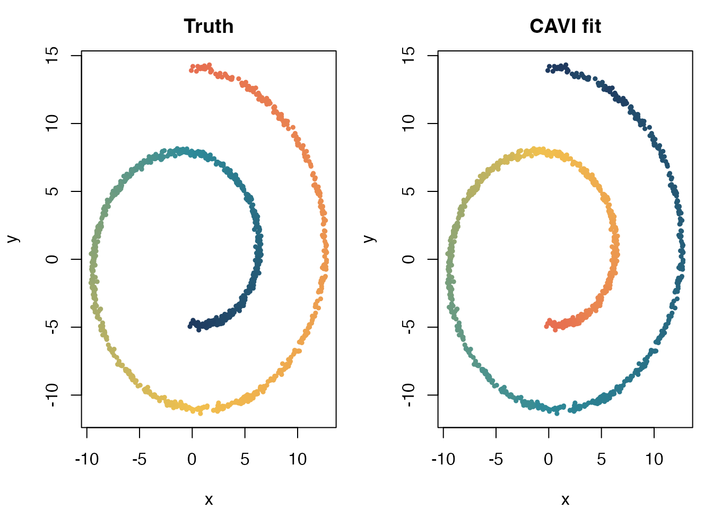

Introduction to MPCurver
Intro.RmdOverview
MPCurver fits smooth trajectory models for pseudotime
inference in high-dimensional data. Given an
data matrix, the package recovers a latent ordering of the
samples by fitting a Gaussian mixture model whose component means are
constrained to vary smoothly along an ordered axis.
The main entry point is fit_mpcurve(), which now exposes
a CAVI-first public interface. Legacy smooth_em and
csmooth_em routines remain available as lower-level
functions for historical comparison, but are not part of the recommended
wrapper workflow.
The model
We observe a data matrix
The MPCurve model posits:
- Each sample has a latent position along an ordered grid of components.
- Each feature has a smooth trajectory across the components.
- Observations follow a Gaussian likelihood:
- Each trajectory is regularised by a Gaussian Markov random field (GMRF) prior: where is a random-walk precision matrix on the grid points and controls the smoothness of feature .
Both and are feature-specific and are estimated from the data.
The algorithm
MPCurver uses coordinate-ascent variational inference
(CAVI). The posterior over latent positions and trajectories is
approximated by a mean-field family:
where
.
CAVI maximises the evidence lower bound (ELBO) one block at a time. Each coordinate update has a closed-form solution:
| Block | Update |
|---|---|
| Trajectories | , |
| Positions | |
| Mixing weights | |
| Feature variance | |
| Smoothness |
Because every update is an exact coordinate maximiser, the recorded
elbo_trace is guaranteed to be non-decreasing.
A key feature of the CAVI updates is the posterior uncertainty term , which appears in both the position update and the variance update. This is what distinguishes the variational approach from a simpler plug-in EM algorithm.
Example: fitting a spiral
We simulate a 2D spiral with 1000 samples.
sim <- simulate_swiss_roll_1d_2d(
n = 1000,
t_range = c(1.5 * pi, 4.5 * pi),
sigma = 0.12,
seed = 1
)
X <- as.matrix(sim$obs)
t_true <- sim$t
cat("Data dimensions:", nrow(X), "x", ncol(X), "\n")
#> Data dimensions: 1000 x 2
pal <- grDevices::colorRampPalette(
c("#1F3A5F", "#2E8A99", "#F2C14E", "#E76F51")
)(256)
col_true <- pal[cut(t_true, breaks = 256, labels = FALSE)]
plot(X, col = col_true, pch = 19, cex = 0.55,
xlab = "x", ylab = "y",
main = "Observed spiral (coloured by true pseudotime)")
Simulated spiral coloured by true pseudotime.
Fitting
The main function is fit_mpcurve(). We choose
K = 60 grid points and the Fiedler (spectral)
initialisation:
fit <- fit_mpcurve(
X,
method = "fiedler",
K = 60,
iter = 120
)
fit
#> MPCurve model fit
#> Algorithm : cavi
#> Model : homoskedastic
#> n / d / K : 1000 / 2 / 60
#> Iterations: 46
#> ELBO (last) : -4787.638294
#> logLik (last): -4474.988366Convergence
The ELBO should be monotonically non-decreasing:
plot(fit, plot_type = "elbo")ELBO trace showing monotone convergence.
Ordering recovery
We can extract a pseudotime estimate from the posterior responsibilities:
pseudotime <- as.numeric(fit$gamma %*% seq_len(ncol(fit$gamma)))
rho <- abs(cor(pseudotime, t_true, method = "spearman"))
cat("Spearman correlation with true pseudotime:", round(rho, 4), "\n")
#> Spearman correlation with true pseudotime: 0.9998
col_fit <- pal[cut(pseudotime, breaks = 256, labels = FALSE)]
op <- par(mfrow = c(1, 2), mar = c(4, 4, 2.5, 1))
plot(X, col = col_true, pch = 19, cex = 0.5,
xlab = "x", ylab = "y", main = "Truth")
plot(X, col = col_fit, pch = 19, cex = 0.5,
xlab = "x", ylab = "y", main = "CAVI fit")
True pseudotime (left) vs inferred pseudotime (right).
par(op)Inferred trajectories
The posterior mean trajectories show how each feature changes along the ordering:
plot(fit, plot_type = "mu")
Posterior mean trajectories for each feature across the K grid points.
Key parameters
| Parameter | Default | Description |
|---|---|---|
K |
min(50, floor(n/5)) |
Number of grid points along the trajectory |
method |
"PCA" |
Initialisation ordering: "PCA", "fiedler",
"isomap", "tSNE", "pcurve",
"random"
|
rw_q |
2 |
Random-walk order for the GMRF prior (1 = piecewise linear, 2 = piecewise cubic) |
iter |
100 |
Maximum number of CAVI sweeps |
lambda |
1 |
Initial value for the smoothness parameters |
Fixing lambda
By default, the smoothness parameter
is estimated for each feature via the variational update. You can fix it
at a constant value using do_mpcurve():
# Continue fitting with lambda fixed at 10
fit_fixed <- do_mpcurve(fit, iter = 50, lambda = 10)Or restrict the optimisation range:
# Allow lambda to optimise within [1, 100]
fit_bounded <- do_mpcurve(fit, iter = 50, lambda_min = 1, lambda_max = 100)Initialisation
The choice of initialisation method can matter, especially for complex geometries. You can compare multiple initialisations in parallel:
fits <- fit_mpcurve(
X,
method = c("PCA", "fiedler", "isomap"),
K = 60,
iter = 100,
num_cores = 3
)
# Compare final ELBO values
attr(fits, "summary")Rules of thumb:
-
"PCA"works well when the underlying trajectory is roughly linear. -
"fiedler"(spectral ordering) is a good default for moderate non-linearity. -
"isomap"can be better for strongly curved manifolds.
Continuing a fit
Use do_mpcurve() to run additional iterations on an
existing fit:
fit <- do_mpcurve(fit, iter = 50)This preserves and extends all traces (elbo_trace,
loglik_trace, lambda_trace, etc.), so you can
monitor convergence incrementally.
Summary
-
fit_mpcurve()is the main entry point. - The CAVI algorithm maintains full posterior uncertainty over feature trajectories, with a monotone ELBO guarantee.
- Use
plot()to visualise scatterplots, ELBO traces, and trajectory profiles. - Use
do_mpcurve()to continue fitting, fix lambda, or restrict parameter bounds. - For dual-ordering / feature partition problems, see
vignette("partition").